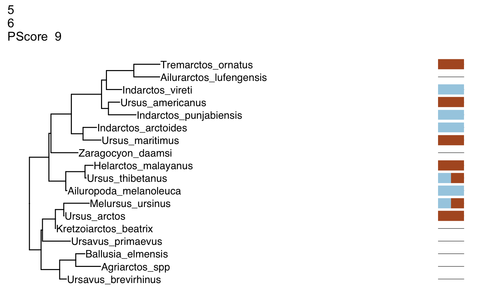
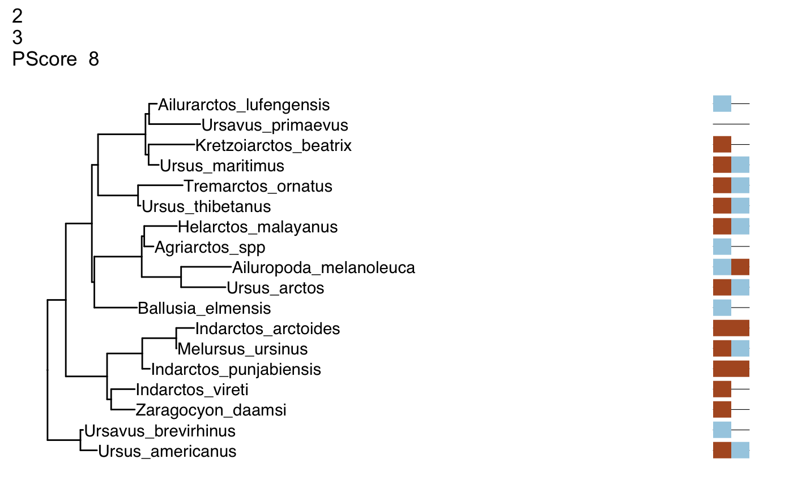
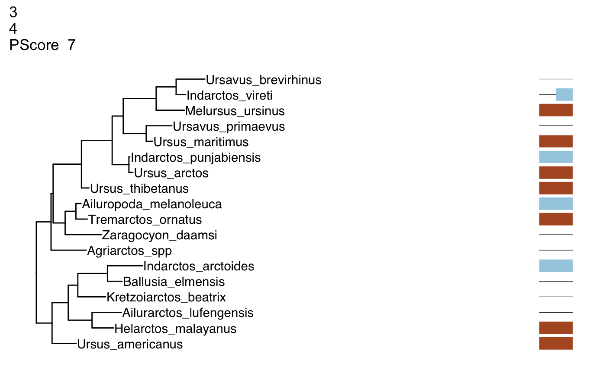
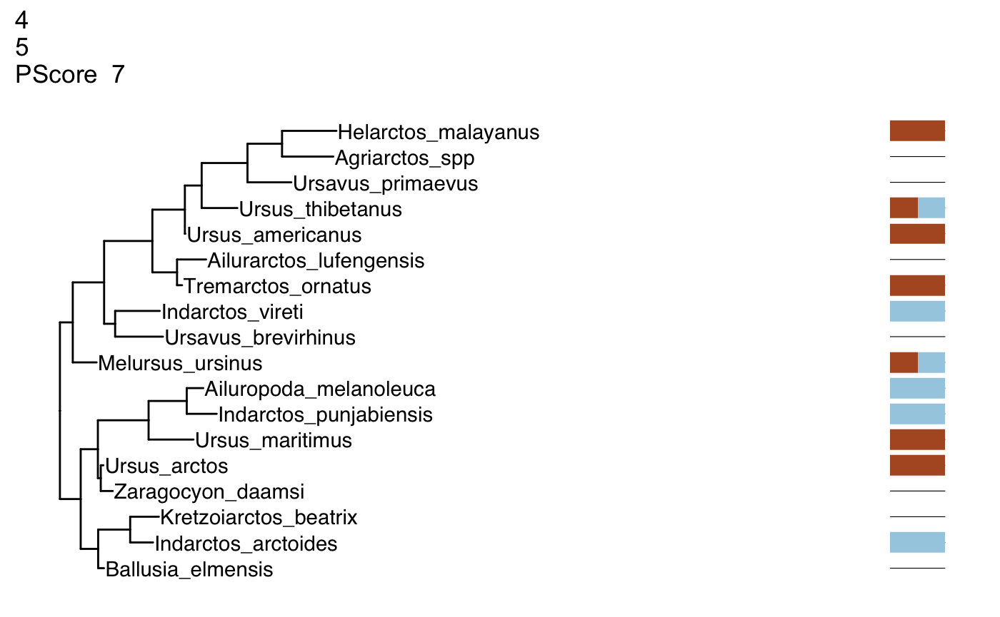
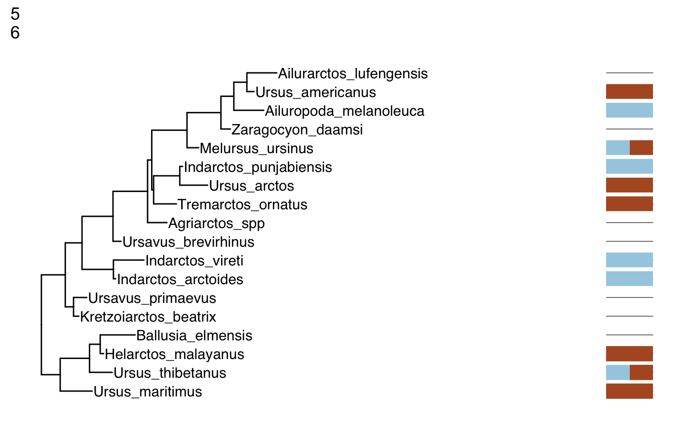

Introduction
Estimating phylogenetic trees is crucial in many areas of evolutionary biology. However, visualizing the relationship between data and trees is not intutive. To assist with visualizing this relationship, I have created treesiftR, an R package (R Core Team 2018) that takes subsets of data from a phylogenetic matrix, generates a tree under parsimony, and scores that tree under both the likelihood and parsimony criteria. The output of the package is a visualization or set of visualizations of a tree and characters. Also included is a Shiny application (Chang et al. 2018) that can be run locally or used via the web without installing any R packages or having knowledge of R.
Target Audience
treesiftr has been used in the Analytical Paleobiology Workshop, in which the audience was graduate students and postdocs, many of whom had no prior knowledge of phylogeny. It is also used in the Genetics course at Southeastern Louisiana University, where the audience is undergraduates who have no prior knowledge of phylogeny. It is meant to be accompanied by lecture material on phylogenetics. A glossary is provided with each worksheet, and a sample slide deck is included in the inst/slides directory.
Installation
Currently, treesiftr can be installed via the devtools install_github function (Wickham, Hester, and Chang 2018).
## Downloading GitHub repo wrightaprilm/treesiftr@master
## from URL https://api.github.com/repos/wrightaprilm/treesiftr/zipball/master## Installing treesiftr## Installation failed: subscript out of boundsRequired Packages
## Loading required package: shiny## Loading required package: ape## Welcome to alignfigR!## ggtree v1.13.2 For help: https://guangchuangyu.github.io/software/ggtree
##
## If you use ggtree in published research, please cite:
## Guangchuang Yu, David Smith, Huachen Zhu, Yi Guan, Tommy Tsan-Yuk Lam. ggtree: an R package for visualization and annotation of phylogenetic trees with their covariates and other associated data. Methods in Ecology and Evolution 2017, 8(1):28-36, doi:10.1111/2041-210X.12628##
## Attaching package: 'ggtree'## The following object is masked from 'package:ape':
##
## rotateOperation
The first step to making a treesiftr visualization is to select the subset of the phylogenetic matrix that we would like to visualize. This is performed via a function called generate_sliding. The below command will subset the
fdir <- system.file("extdata", package = "treesiftr")
aln_path <- file.path(fdir, "bears_fasta.fa")
bears <- read_alignment(aln_path)
tree <- read.tree(file.path(fdir, "starting_tree.tre"))
sample_df <- generate_sliding(bears, start_char = 1, stop_char = 10, steps = 1)
# Generate our list of dataframe subsets
sample_df <- generate_sliding(bears, start_char = 1, stop_char = 5, steps = 1)The result of this is a dataframe, shown below:
## starting_val stop_val step_val
## 1 1 2 1
## 2 2 3 1
## 3 3 4 1
## 4 4 5 1
## 5 5 6 1This dataframe dispays the start character (the first character that will be visualized) and stop character (the final character that will be visualized).
We can then build trees from each subset:
output_vector <- generate_tree_vis(sample_df = sample_df, alignment = aln_path, tree = tree, phy_mat = bears)## Final p-score 2 after 0 nni operations
## Final p-score 2 after 0 nni operations
## Final p-score 2 after 0 nni operations
## Final p-score 2 after 1 nni operations
## Final p-score 2 after 1 nni operations## [[1]]
##
## [[2]]
##
## [[3]]
##
## [[4]]
##
## [[5]]
Phangorn (Schliep 2011, Schliep2017) requires a starting tree to estimate a parsimony tree. We specify the tree we read in earlier for this purpose. The trees, which were generated with ggtree (Yu et al. 2017), a ggplot2 (Wickham 2016) library for phylogenies, have been saved to a vector, which can be displayed in its entirety, or subsetted to look at specific trees.
References
Chang, Winston, Joe Cheng, JJ Allaire, Yihui Xie, and Jonathan McPherson. 2018. Shiny: Web Application Framework for R. https://CRAN.R-project.org/package=shiny.
R Core Team. 2018. R: A Language and Environment for Statistical Computing. Vienna, Austria: R Foundation for Statistical Computing. https://www.R-project.org/.
Schliep, K.P. 2011. “Phangorn: Phylogenetic Analysis in R.” Bioinformatics 27 (4): 592–93. https://doi.org/10.1093/bioinformatics/btq706.
Wickham, Hadley. 2016. Ggplot2: Elegant Graphics for Data Analysis. Springer-Verlag New York. http://ggplot2.org.
Wickham, Hadley, Jim Hester, and Winston Chang. 2018. Devtools: Tools to Make Developing R Packages Easier. https://CRAN.R-project.org/package=devtools.
Yu, Guangchuang, David Smith, Huachen Zhu, Yi Guan, and Tommy Tsan-Yuk Lam. 2017. “Ggtree: An R Package for Visualization and Annotation of Phylogenetic Trees with Their Covariates and Other Associated Data.” Methods in Ecology and Evolution 8 (1): 28–36. https://doi.org/10.1111/2041-210X.12628.